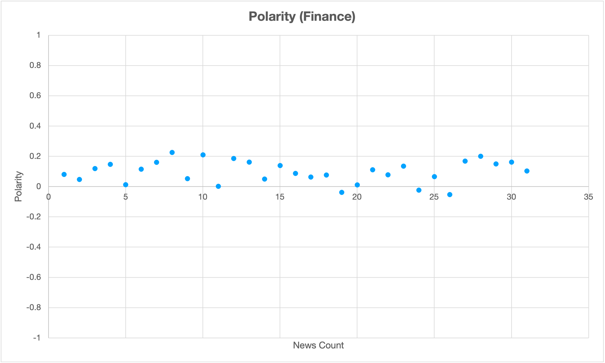
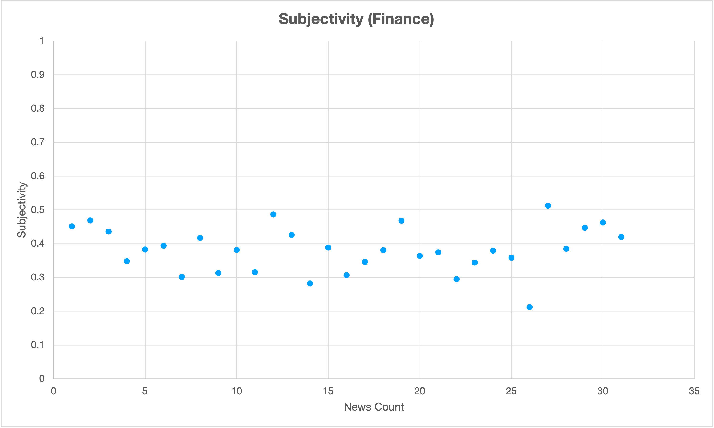

Sentiments
There are a total of 31 finance news.
Polarity
Polarity of the news, represents the emotional sentiment of the data, ranging from -1 to 1 (most negative to most positive.)
The figure shows that the range of the polarity is from -0.053 to 0.226, which is a relatively narrow range. The mean and median are similar so there are no extreme polarity. This showed most of the news in finance category were delivering informative content, but not strong personal emotion.
The upper figure showed the distribution of polarity, below are some details (corrected to 3 decimal places).
| Mean | 0.097 |
|---|---|
| Minimum | -0.053 |
| Lower Quartile(25%) | 0.051 |
| Median(50%) | 0.103 |
| Upper Quartile(75%) | 0.155 |
| Maximum | 0.226 |
For more information in each category, please access through the tabs on page top.
Subjectivity
Subjectivity of the news can determine whether it is objective or not, ranging from 0 to 1 (most objective to most subjective).
The mean and median were similar, showed there are no extreme subjectiveness of the news. The maximum value is 0.513, showed there are no extreme subjective news in finance category that expressing personal opinion.
The upper figure showed the distribution of subjectivity, below are some details (corrected to 3 decimal places).
| Mean | 0.382 |
|---|---|
| Minimum | 0.212 |
| Lower Quartile(25%) | 0.345 |
| Median(50%) | 0.382 |
| Upper Quartile(75%) | 0.431 |
| Maximum | 0.513 |
For more information in each category, please access through the tabs on page top.